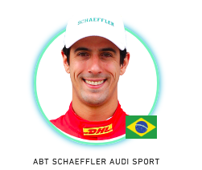
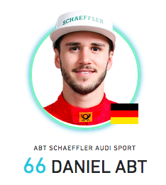

The Abt Schaeffler Audi Sport team has been a regular front-runner in Formula E since winning the inaugural race back in Beijing 2014.The technical relationship with Schaeffler has been the driving force behind the development of the powertrain, which took Lucas di Grassi to within a couple of points of the season two championship.However, Audi has announced that it will be ramping up its support of the team following the cessation of its World Endurance Championship programme.Di Grassi and team-mate Daniel Abt have been on board since the first season, with both drivers taking multiple podium finishes.The Abt team has a long association with Audi, not just through motorsport but also through its Sportsline aftermarket tuning division.
About he racer in this car.
1.LUCAS DI GRASSI

Intresting Fact
Di Grassi is working with Roborace to help develop the world's first driverless racing car?
BIOGRAPHY
Di Grassi was the winner of the first-ever Formula E race - the 2014 Beijing ePrix - and has appeared on the podium more times than any other driver. He finished third in the first season, and took the season two title down to the wire, but ultimately just lost out.He has driven for the ABT Schaeffler Audi Sport team throughout, but was the first driver to commit to the series and played a key role in the development of the original spec car that was used in season one.He spent a season racing in F1 for Virgin and was a test driver for the Renault team too.
Points & Results.
Points : 433
Poles : 2
Front Rows : 8
Fastest Laps :1
Raced Laps :1150
Led Races :11
Led Laps : 182
Led Km : 398
2.ANTONIO FELIX DA COSTA

Intresting Fact
Abt was voted Germany's Motorsport Talent of the Year by the Deutsche Post Speed Academy?
BIOGRAPHY
Daniel Abt has had two seasons of mixed fortunes in Formula E, but ended season two strongly with three podiums in the final six races.Abt is no stranger to the world of motorsport. His father Hans-Jurgen, is the owner and team principal of Abt Sportsline which competes in the DTM series, amongst others, as well as being the only German Formula E outfit. His uncle, Christian Abt, is a racing driver as well and was active in DTM for a number of years.
Daniel went karting for the first time when he was six-years-old, winning his first seven races. He quickly progressed up the ladder to Formula 3 Euro Series where he made his debut as the youngest driver on the grid in 2011, finishing on the podium three times. A year heenjoyed a very successful season in GP3 with the Lotus GP squad, securing two wins and seven podiums but just missed out on the title to Formula E rival Mitch Evans.He spent two largely luckless seasons in GP2 before moving into Formula E.Along with Formula E, Abt raced in the 2016 ADAC GT series in a Bentley Continental run by the ABT team.
The works BMW driver scored a breakthrough victory in the prestigious DTM touring car series to bolster an already impressive CV that includes victory at the Macau Grand Prix, which he returned to in 2016, scoring a brilliant win.
Points & Results.
Points : 147
Poles : 1
Front Rows : 2
Fastest Laps :2
Raced Laps :1075
Led Races :4
Led Laps : 41
Led Km : 88